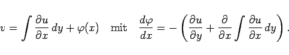

Inhalt Index DeskTop Bronstein

 Funktionentheorie Funktionen einer komplexen Veränderlichen Analytische Funktionen
Funktionentheorie Funktionen einer komplexen Veränderlichen Analytische Funktionen


| Beispiel A |
|
Die Funktion w=z2 mit u=x2-y2 und v=2xy ist überall analytisch. |
| Beispiel B |
|
Die Funktion , definiert durch die Gleichungen , ist in keinem Punkt analytisch. |
| Beispiel C |
|
Die Funktion f(z)=z3 mit f'(z)=3z2 ist analytisch. |
| Beispiel D |
|
Die Funktion mit ist analytisch. |
|  | (14.6) |
Analog kann u ermittelt werden, wenn v bekannt ist.